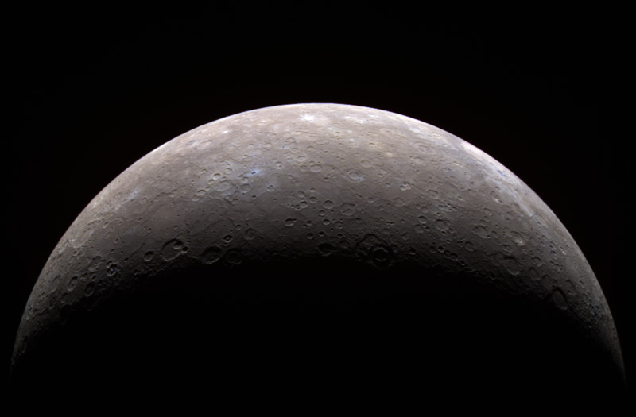

Általánosságban
A Merkúr a Naprendszer legbelső és legkisebb bolygója, a Nap körüli keringési ideje 88 nap. A Merkúr a Földről nézve fényesnek látszik, azonban nehéz észlelni, mert a Földről nézve a Naptól mérhető legnagyobb szögtávolsága csak 28,3°. Reggel vagy este szürkületkor lehet megfigyelni.
Felszíne

A Merkúr felszíne megjelenésében nagyban hasonlít a Holdéra; kiterjedt tengerszerű síkságok és sok kráter jelzi, hogy felszíne már több milliárd éve változatlan. Mivel a Merkúr felszínéről ismertté vált dolgok a Mariner repülésének és a nagy felbontású űrtávcsövek megfigyeléseinek köszönhetők, ezt a bolygót ismerjük legkevésbé a Föld-típusú bolygók közül.
Magyar vonatkozások
A Merkúron hat magyar vonatkozású elnevezés található: Bartók Béláról, Jókai Mórról, Liszt Ferencről, Petőfi Sándorról, Munkácsy Mihályról és André Kertész magyar származású fotóművészről neveztek el krátert
Felépítése
A Merkúr a Naprendszer négy Föld-típusú bolygójának egyike, és a Földhöz hasonlóan kőzetekből épül fel. A Naprendszer legkisebb bolygója, egyenlítőjénél mért sugara 2439,7 km, mérete kisebb még a legnagyobb természetes holdakénál is, bár tömege jóval nagyobb náluk. A Merkúr nagyjából 70% fémet és 30% szilikátot tartalmaz. A Merkúr a maga 5,427 g/cm³-es sűrűségével a Naprendszer második legsűrűbb bolygója. Ez az érték már csak alig kisebb, mint a Föld 5,515 g/cm³-os értéke. Ha a gravitációs erőből származó sűrűsödés hatását figyelmen kívül hagyjuk, akkor a Merkúrt alkotó elemek sűrűbbek, mivel ekkor a Merkúr esetében 5,3 g/cm³, míg a Földnél 4,4 g/cm³ értéket kapunk.